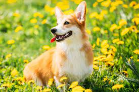

Titulo
Com a origem semelhante, o Welsh Corgi Cardigan e o Welsh Corgi Pembroke são muito descontraídos e companheiros de seus tutores. Apesar do pequeno porte, eles são muito ativos e amam fazer esportes, além de sempre estarem em estado de alerta para proteger sua família humana.
A aparência tem conquistado cada vez mais amantes de cachorro. A feição dócil e alegre do cachorro Corgi encanta a qualquer um e suas orelhinhas sempre eretas reforçam sua posição de pastor e protetor.
Apesar de serem afetuosos assim, essas são duas das raças que melhor ficam sozinhas, mas não se esqueça de que precisam gastar em passeios toda a energia que acumulam! Vamos conhecer mais sobre esses cachorros incríveis?
.jpeg)
Como falamos, a raça Corgi é muito enérgica e independente, por isso é muito importante que faça exercícios com seu amigão e permita que ele pratique atividades sozinho também.
Devido ao seu porte e temperamento, é um cachorro perfeito para quem ama pets, mas mora em apartamento e passa a maior parte do dia longe do lar.
.jpeg)
O Corgi tem temperamento extremamente dócil, mas é importante lembrar que seu instinto é de pastoreio, por isso alguns hábitos podem ser inevitáveis, como as leves mordiscadas no tornozelo. Mas não se preocupe! Em poucas aulas de adestramento, seu cachorro já saberá como controlar e evitar essa brincadeira.

Suas perninhas curtas e porte pequeno enganam! Os Corgis são muito atléticos e ativos, excelentes para esportes caninos, como agility, herding, flyball e obediência, caminhadas e trilhas. Hoje, o Pembroke tem mais o papel de companheiro doméstico e familiar, mas ainda mantém seu instinto de pastoreio.
Veja mais sobre